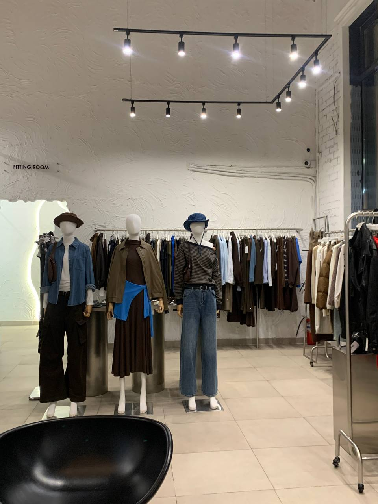

Instyle.zh2 (on Instagram — @instyle.zh2, the brand is also known as ZH2 store) is a
chain of women’s clothing boutiques in Astana. Today, the store operates at three
locations in the city: in the Nexpo City residential complex on Turar Ryskulov Street, on
Respublika Avenue, and in the Severnoye Siyanie residential complex on Dostyk Street —
all three are open daily from 11:00 to 21:00. The store is run by Kusainov Temirlan
Musaevich. According to the company’s job advertisements, the brand has been operating
in the Astana market for several years, gradually growing from a single location into a
small chain. Jump straight to the contact table if you like.
Instyle.zh2 specializes in everyday women’s clothing at affordable prices: sweatshirts,
dresses, trousers, as well as bags, belts, glasses, and hats. The assortment is updated
almost every week — new models appear in the stories with tags like “NEW”
and “Autumn ’26”. Judging by customer reviews and the 4.8 rating on 2GIS,
the store is distinguished by polite consultants, high-quality fabric, and accurate sizing
that matches the description. Another distinctive feature is close communication with
customers directly via WhatsApp and Instagram Direct, where clients get advice on sizing and
send photos after receiving their order.
How It All Began
The story so far
Instyle.zh2 started out as a small women’s clothing showroom in Astana and over
time grew into three retail locations in different areas of the city. For all these
years the store has been run by Temirlan Musaevich Kusainov, and decisions about new
collections are made taking the season and customer feedback from direct messages into
account.
Affordable clothing without compromising on quality — most items
cost between 6,000 anч 12,000 tenge, but according to customer reviews they fit
“great” and “the right size”. Instead of classic advertising,
the store publishes real screenshots of conversations and photos from customers after
delivery in its stories.

Current collection on display.
Here’s what a customer shared with the store:
“Thank you for the consultation, everything arrived the right size, the quality is amazing 👍👍👍”
— from a conversation with a customer, published in the instyle.zh2 “reviews” highlight,
≈ November 2025.
As they describe themselves in the bio: clothing at affordable prices.
Key Information
Real data about the Instyle.zh2 store
Parameter
Value
City
Astana
Fulfillment
Pickup from one of three locations or courier delivery around the city
approx. 8,000–15,000 ₸ (estimate based on story prices)
What You Can Find Here
Clothing
Sweatshirts
Dresses and trousers
Accessories
Bags, belts, glasses, hats
Message via Instagram Direct or WhatsApp
Confirm size/model availability
Arrange pickup or delivery
Lookbook
A curated set of outfit photos published by the store.
Zh2
No public explanation in the profile — most likely just part of the brand name.
Store profile — instagram.com/instyle.zh2
(opens in a new tab). Have a question before ordering? Email us at
zhan.ideas@mail.ru or message us on WhatsApp
+7 701 254 02 03 —
we reply quickly, even on weekends. Average response time is
approx. 30 minutes, unless it’s late at night*.
The contact info above should be double-checked against the current Instagram bio or direct
messages.